Figure fig_ch04_p061_02 (Page 61)
Figure fig_ch04_p061_03 (Page 61)
Figure fig_ch04_p061_04 (Page 61)
 Figure fig_ch04_p061_05 (Page 61)
Figure fig_ch04_p061_06 (Page 61)
Figure fig_ch04_p061_07 (Page 61)
Figure fig_ch04_p061_08 (Page 61)
Figure fig_ch04_p061_09 (Page 61)
Figure fig_ch04_p061_10 (Page 61)
Figure fig_ch04_p061_11 (Page 61)
Figure fig_ch04_p061_12 (Page 61)
Figure fig_ch04_p061_05 (Page 61)
Figure fig_ch04_p061_06 (Page 61)
Figure fig_ch04_p061_07 (Page 61)
Figure fig_ch04_p061_08 (Page 61)
Figure fig_ch04_p061_09 (Page 61)
Figure fig_ch04_p061_10 (Page 61)
Figure fig_ch04_p061_11 (Page 61)
Figure fig_ch04_p061_12 (Page 61)
Figure fig_ch04_p062_01 (Page 62)
Figure fig_ch04_p062_03 (Page 62)
Figure fig_ch04_p062_04 (Page 62)
Figure fig_ch04_p062_05 (Page 62)
Figure fig_ch04_p062_06 (Page 62)
Figure fig_ch04_p062_07 (Page 62)
Figure fig_ch04_p062_08 (Page 62)
Figure fig_ch04_p062_09 (Page 62)
Figure fig_ch04_p062_10 (Page 62)
Figure fig_ch04_p062_11 (Page 62)
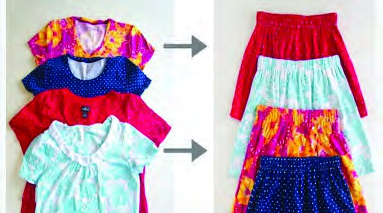
Figure fig_ch04_p064_01 (Page 64)
Figure fig_ch04_p064_02 (Page 64)
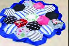
Figure fig_ch04_p064_03 (Page 64)
Figure fig_ch04_p064_04 (Page 64)
Figure fig_ch04_p064_05 (Page 64)
Figure fig_ch04_p065_01 (Page 65)
 Figure fig_ch04_p066_01 (Page 66)
Figure fig_ch04_p066_01 (Page 66)
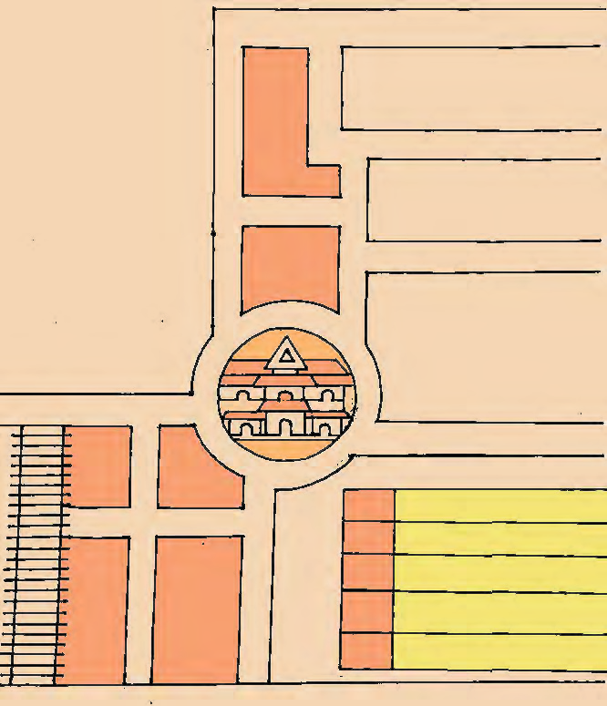
Figure fig_ch04_p066_02 (Page 66)
Figure fig_ch04_p066_03 (Page 66)
Figure fig_ch04_p066_04 (Page 66)
Figure fig_ch04_p066_05 (Page 66)
Figure fig_ch04_p066_06 (Page 66)
Figure fig_ch04_p066_07 (Page 66)
Figure fig_ch04_p066_08 (Page 66)
Figure fig_ch04_p066_09 (Page 66)
Figure fig_ch04_p066_10 (Page 66)
Figure fig_ch04_p069_01 (Page 69)
Figure fig_ch04_p069_02 (Page 69)
Figure fig_ch04_p069_03 (Page 69)
Figure fig_ch04_p069_04 (Page 69)
Figure fig_ch04_p069_05 (Page 69)
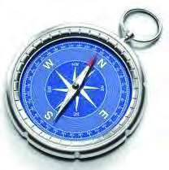
Figure fig_ch04_p069_07 (Page 69)
 Figure fig_ch04_p069_08 (Page 69)
Figure fig_ch04_p069_10 (Page 69)
Figure fig_ch04_p069_11 (Page 69)
Figure fig_ch04_p069_12 (Page 69)
Figure fig_ch04_p069_13 (Page 69)
Figure fig_ch04_p069_14 (Page 69)
Figure fig_ch04_p069_15 (Page 69)
Figure fig_ch04_p069_16 (Page 69)
Figure fig_ch04_p069_17 (Page 69)
Figure fig_ch04_p069_18 (Page 69)
Figure fig_ch04_p069_19 (Page 69)
Figure fig_ch04_p069_20 (Page 69)
Figure fig_ch04_p069_21 (Page 69)
Figure fig_ch04_p069_08 (Page 69)
Figure fig_ch04_p069_10 (Page 69)
Figure fig_ch04_p069_11 (Page 69)
Figure fig_ch04_p069_12 (Page 69)
Figure fig_ch04_p069_13 (Page 69)
Figure fig_ch04_p069_14 (Page 69)
Figure fig_ch04_p069_15 (Page 69)
Figure fig_ch04_p069_16 (Page 69)
Figure fig_ch04_p069_17 (Page 69)
Figure fig_ch04_p069_18 (Page 69)
Figure fig_ch04_p069_19 (Page 69)
Figure fig_ch04_p069_20 (Page 69)
Figure fig_ch04_p069_21 (Page 69)
 Figure fig_ch04_p069_22 (Page 69)
Figure fig_ch04_p069_22 (Page 69)
 Figure fig_ch04_p069_23 (Page 69)
Figure fig_ch04_p069_23 (Page 69)
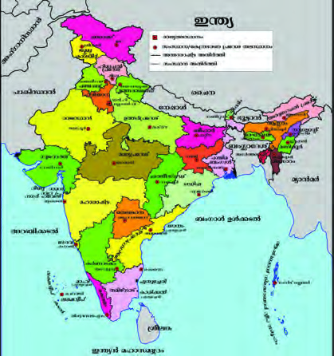
Figure fig_ch04_p069_24 (Page 69)
Figure fig_ch04_p069_25 (Page 69)
Figure fig_ch04_p069_26 (Page 69)
Figure fig_ch04_p069_27 (Page 69)
Figure fig_ch04_p069_30 (Page 69)
Figure fig_ch04_p069_31 (Page 69)
Figure fig_ch04_p069_32 (Page 69)
Figure fig_ch04_p070_01 (Page 70)
Figure fig_ch04_p070_03 (Page 70)
Figure fig_ch04_p070_05 (Page 70)
Figure fig_ch04_p070_07 (Page 70)
Figure fig_ch04_p070_08 (Page 70)
Figure fig_ch04_p070_09 (Page 70)
 Figure fig_ch04_p070_10 (Page 70)
Figure fig_ch04_p070_11 (Page 70)
Figure fig_ch04_p070_10 (Page 70)
Figure fig_ch04_p070_11 (Page 70)
 Figure fig_ch04_p071_01 (Page 71)
Figure fig_ch04_p071_02 (Page 71)
Figure fig_ch04_p071_03 (Page 71)
Figure fig_ch04_p071_04 (Page 71)
Figure fig_ch04_p071_05 (Page 71)
Figure fig_ch04_p071_06 (Page 71)
Figure fig_ch04_p071_07 (Page 71)
Figure fig_ch04_p071_08 (Page 71)
Figure fig_ch04_p071_09 (Page 71)
Figure fig_ch04_p071_10 (Page 71)
Figure fig_ch04_p071_13 (Page 71)
Figure fig_ch04_p071_01 (Page 71)
Figure fig_ch04_p071_02 (Page 71)
Figure fig_ch04_p071_03 (Page 71)
Figure fig_ch04_p071_04 (Page 71)
Figure fig_ch04_p071_05 (Page 71)
Figure fig_ch04_p071_06 (Page 71)
Figure fig_ch04_p071_07 (Page 71)
Figure fig_ch04_p071_08 (Page 71)
Figure fig_ch04_p071_09 (Page 71)
Figure fig_ch04_p071_10 (Page 71)
Figure fig_ch04_p071_13 (Page 71)
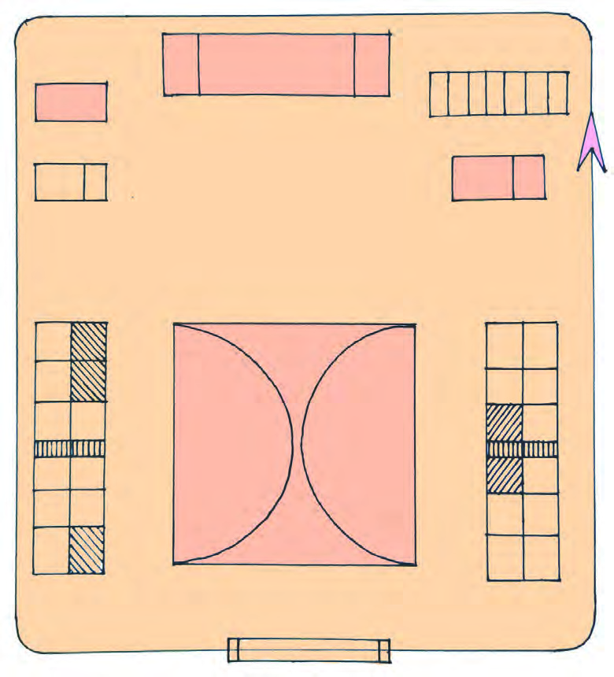
Figure fig_ch04_p071_14 (Page 71)
Figure fig_ch04_p072_01 (Page 72)
Figure fig_ch04_p072_03 (Page 72)
Figure fig_ch04_p073_01 (Page 73)
Figure fig_ch04_p073_03 (Page 73)
Figure fig_ch04_p073_04 (Page 73)
Figure fig_ch04_p073_05 (Page 73)
Figure fig_ch04_p073_07 (Page 73)
Figure fig_ch04_p073_08 (Page 73)
Figure fig_ch04_p073_10 (Page 73)
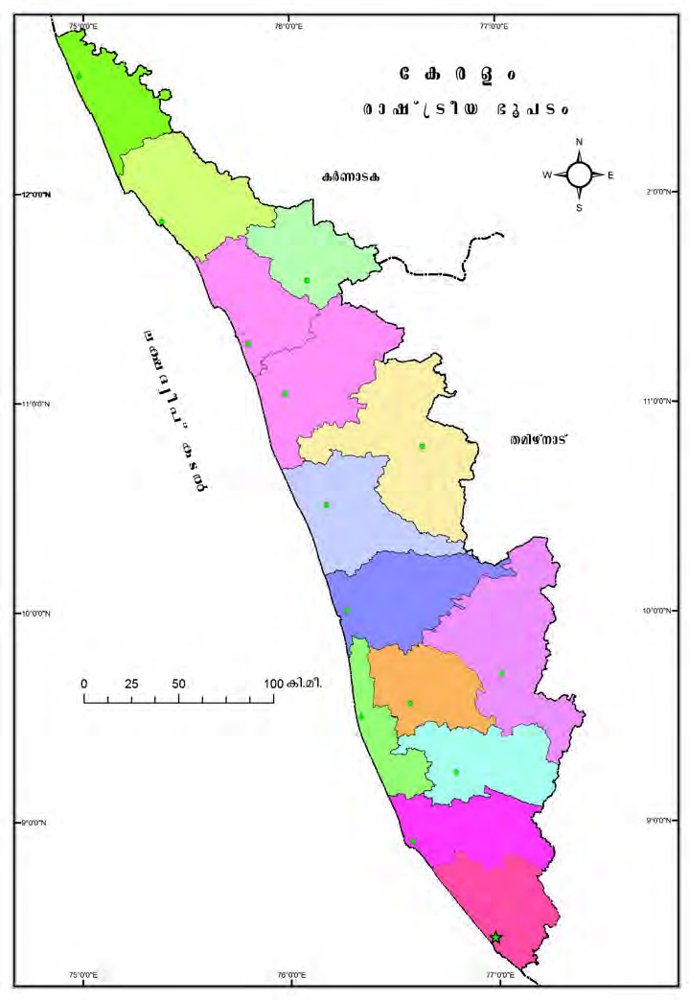
Figure fig_ch04_p074_01 (Page 74)
Figure fig_ch04_p074_03 (Page 74)
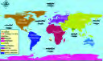
Figure fig_ch04_p074_04 (Page 74)
Figure fig_ch04_p077_01 (Page 77)
Figure fig_ch04_p077_03 (Page 77)
Figure fig_ch04_p077_04 (Page 77)
Figure fig_ch04_p077_05 (Page 77)
 Figure fig_ch04_p077_06 (Page 77)
Figure fig_ch04_p077_08 (Page 77)
Figure fig_ch04_p077_11 (Page 77)
Figure fig_ch04_p077_12 (Page 77)
Figure fig_ch04_p077_13 (Page 77)
Figure fig_ch04_p077_14 (Page 77)
Figure fig_ch04_p077_17 (Page 77)
Figure fig_ch04_p077_18 (Page 77)
Figure fig_ch04_p077_19 (Page 77)
Figure fig_ch04_p077_20 (Page 77)
Figure fig_ch04_p077_06 (Page 77)
Figure fig_ch04_p077_08 (Page 77)
Figure fig_ch04_p077_11 (Page 77)
Figure fig_ch04_p077_12 (Page 77)
Figure fig_ch04_p077_13 (Page 77)
Figure fig_ch04_p077_14 (Page 77)
Figure fig_ch04_p077_17 (Page 77)
Figure fig_ch04_p077_18 (Page 77)
Figure fig_ch04_p077_19 (Page 77)
Figure fig_ch04_p077_20 (Page 77)
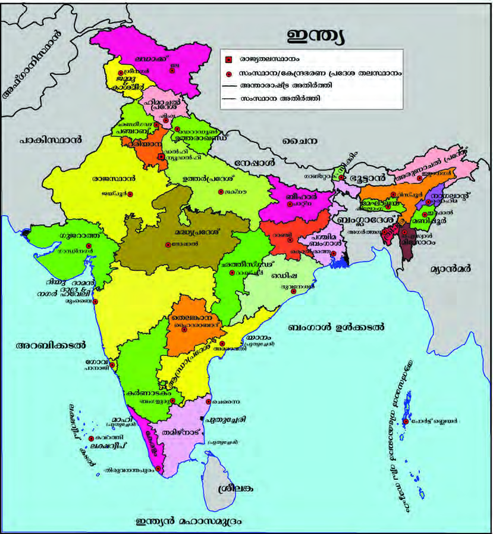
Figure fig_ch04_p078_01 (Page 78)
Figure fig_ch04_p078_02 (Page 78)
Figure fig_ch04_p078_03 (Page 78)
Figure fig_ch04_p078_04 (Page 78)
Figure fig_ch04_p078_05 (Page 78)
 Figure fig_ch04_p078_07 (Page 78)
Figure fig_ch04_p078_07 (Page 78)
 Figure fig_ch04_p078_08 (Page 78)
Figure fig_ch04_p078_08 (Page 78)
 Figure fig_ch04_p078_09 (Page 78)
Figure fig_ch04_p078_11 (Page 78)
Figure fig_ch04_p078_12 (Page 78)
Figure fig_ch04_p078_13 (Page 78)
Figure fig_ch04_p078_14 (Page 78)
Figure fig_ch04_p078_09 (Page 78)
Figure fig_ch04_p078_11 (Page 78)
Figure fig_ch04_p078_12 (Page 78)
Figure fig_ch04_p078_13 (Page 78)
Figure fig_ch04_p078_14 (Page 78)
Figure fig_ch04_p080_01 (Page 80)
Figure fig_ch04_p080_03 (Page 80)
Figure fig_ch04_p080_04 (Page 80)
Figure fig_ch04_p080_05 (Page 80)
Figure fig_ch04_p080_06 (Page 80)
Figure fig_ch04_p080_07 (Page 80)
Figure fig_ch04_p080_08 (Page 80)
Figure fig_ch04_p080_09 (Page 80)
Figure fig_ch04_p080_10 (Page 80)
Figure fig_ch04_p080_11 (Page 80)
Figure fig_ch04_p080_12 (Page 80)
Figure fig_ch04_p080_13 (Page 80)
Figure fig_ch04_p080_14 (Page 80)
Figure fig_ch04_p080_15 (Page 80)
Figure fig_ch04_p080_16 (Page 80)
Figure fig_ch04_p080_17 (Page 80)
 Figure fig_ch04_p080_18 (Page 80)
Figure fig_ch04_p080_18 (Page 80)
 Figure fig_ch04_p080_20 (Page 80)
Figure fig_ch04_p080_21 (Page 80)
Figure fig_ch04_p080_22 (Page 80)
Figure fig_ch04_p080_23 (Page 80)
Figure fig_ch04_p080_24 (Page 80)
Figure fig_ch04_p080_20 (Page 80)
Figure fig_ch04_p080_21 (Page 80)
Figure fig_ch04_p080_22 (Page 80)
Figure fig_ch04_p080_23 (Page 80)
Figure fig_ch04_p080_24 (Page 80)
 Figure fig_ch04_p080_25 (Page 80)
Figure fig_ch04_p080_27 (Page 80)
Figure fig_ch04_p080_28 (Page 80)
Figure fig_ch04_p080_29 (Page 80)
Figure fig_ch04_p080_30 (Page 80)
Figure fig_ch04_p080_31 (Page 80)
Figure fig_ch04_p080_32 (Page 80)
Figure fig_ch04_p080_33 (Page 80)
Figure fig_ch04_p080_34 (Page 80)
Figure fig_ch04_p080_35 (Page 80)
Figure fig_ch04_p080_36 (Page 80)
Figure fig_ch04_p080_37 (Page 80)
Figure fig_ch04_p080_25 (Page 80)
Figure fig_ch04_p080_27 (Page 80)
Figure fig_ch04_p080_28 (Page 80)
Figure fig_ch04_p080_29 (Page 80)
Figure fig_ch04_p080_30 (Page 80)
Figure fig_ch04_p080_31 (Page 80)
Figure fig_ch04_p080_32 (Page 80)
Figure fig_ch04_p080_33 (Page 80)
Figure fig_ch04_p080_34 (Page 80)
Figure fig_ch04_p080_35 (Page 80)
Figure fig_ch04_p080_36 (Page 80)
Figure fig_ch04_p080_37 (Page 80)
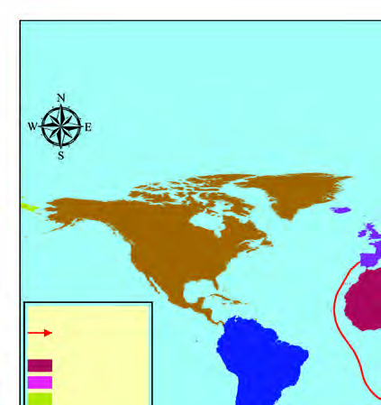
Figure fig_ch04_p080_38 (Page 80)
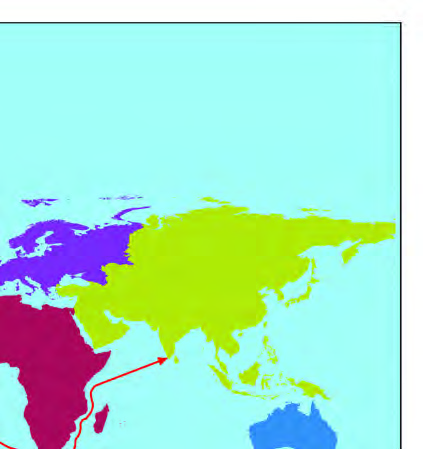
Figure fig_ch04_p080_39 (Page 80)
Figure fig_ch04_p080_40 (Page 80)
Figure fig_ch04_p080_41 (Page 80)
Figure fig_ch04_p080_42 (Page 80)
Figure fig_ch04_p080_43 (Page 80)
Figure fig_ch04_p080_44 (Page 80)
 Figure fig_ch04_p080_45 (Page 80)
Figure fig_ch04_p080_46 (Page 80)
Figure fig_ch04_p080_47 (Page 80)
Figure fig_ch04_p080_48 (Page 80)
Figure fig_ch04_p080_49 (Page 80)
Figure fig_ch04_p080_45 (Page 80)
Figure fig_ch04_p080_46 (Page 80)
Figure fig_ch04_p080_47 (Page 80)
Figure fig_ch04_p080_48 (Page 80)
Figure fig_ch04_p080_49 (Page 80)
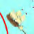
Figure fig_ch04_p080_50 (Page 80)
Figure fig_ch04_p080_51 (Page 80)
Figure fig_ch04_p080_52 (Page 80)
Figure fig_ch04_p080_53 (Page 80)
Figure fig_ch04_p080_54 (Page 80)